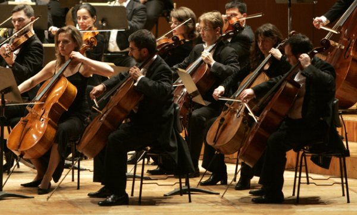

🎤 Pop
El pop es un género musical muy popular que se caracteriza por su melodía pegajosa, ritmos accesibles y letras que a menudo abordan temas cotidianos, como el amor, la diversión y las relaciones. A menudo incorpora elementos de otros géneros como el rock, el hip-hop, la electrónica y el R&B.
Desde sus inicios, el pop ha evolucionado y ha dado lugar a una variedad de subgéneros. Artistas icónicos como Michael Jackson, Madonna y Britney Spears han dejado una huella profunda en la cultura pop. En la actualidad, artistas como Taylor Swift, Dua Lipa y Bad Bunny están redefiniendo el género con sus estilos únicos.

🎸 Rock
El rock nació en los años 50 y se caracteriza por guitarras eléctricas, batería fuerte y actitud rebelde. Bandas como The Beatles, Queen y Nirvana marcaron historia. El rock es un género musical fascinante que abarca una amplia gama de estilos, desde el rock and roll inicial hasta subgéneros como el hard rock, el punk rock, el rock alternativo y el metal.
Algunos de los artistas y bandas más emblemáticos del rock incluyen a The Beatles, Led Zeppelin, Queen, Nirvana y The Rolling Stones. Además de su música poderosa, el rock a menudo se asocia con una actitud rebelde y una cultura que desafía las normas sociales.
🎧 Reggaetón
Originado en Puerto Rico, el reggaetón mezcla ritmos latinos, hip hop y dancehall. Es uno de los géneros más populares actualmente. Artistas famosos incluyen Bad Bunny, Daddy Yankee y Karol G. El reguetón es un género musical que ha tomado el mundo por asalto en las últimas décadas, combinando ritmos de reggae, hip-hop y música latina, creando un sonido muy bailable y pegajoso.
🎻 Música Clásica
La música clásica abarca siglos de historia musical, con compositores como Mozart, Beethoven y Bach. Es apreciada por su complejidad, elegancia y profundidad emocional. Se caracteriza por su complejidad estructural, el uso de una variedad de instrumentos orquestales y su enfoque en la notación musical precisa.
🎶 Electrónica
La música electrónica emplea instrumentos musicales electrónicos y tecnología musical electrónica para su producción e interpretación. Ejemplos de dispositivos: órgano Hammond, guitarra eléctrica, theremín, sintetizador y ordenador.